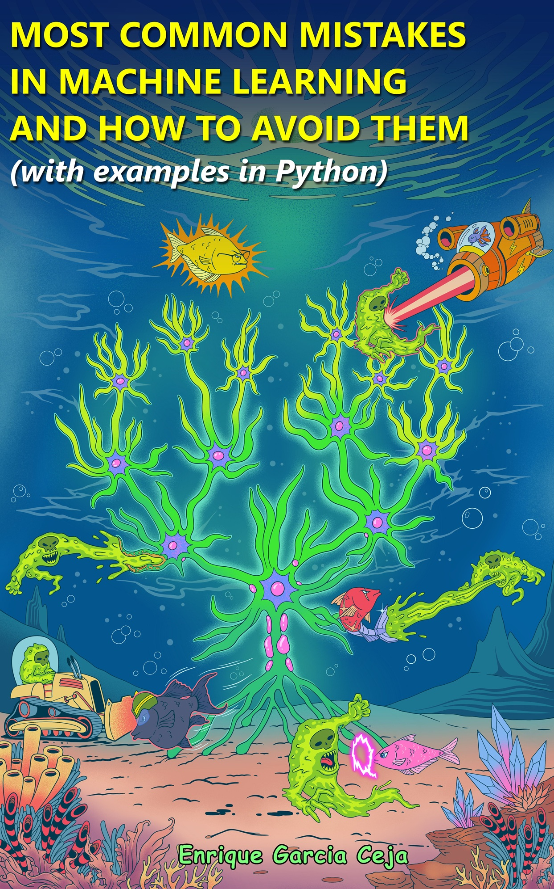

MOST COMMON MISTAKES IN MACHINE LEARNING AND HOW TO AVOID THEM
(with examples in Python)
2025-06-19
Welcome

This is the free html version of the book. The pdf version can be purchased (free for a limited period of time!) at Leanpub.
This book is a compilation of the most common mistakes when building machine learning models. I have gathered this list from mistakes I typically find when grading assignments, supervising graduate students, reading blog posts, looking at the accompanying code of published papers, and of course, from my own experience making those mistakes.
Understanding and being aware of those common mistakes will allow you not only to avoid them, but to build better machine learning systems and less prone to errors. This book includes examples in Python. Some examples of mistakes that you will find in this book include:
- Not understanding the data
- Including irrelevant variables
- Data injection
- Assuming all users behave the same
- Wasting unlabeled data
- and much more!
The accompanying source code for all examples is available at https://github.com/enriquegit/ml-mistakes-code
The front cover captures a representation of the majestic Neural Tree being attacked by the so called neuruptors. Fortunately, the Science-Fish-Team is here to protect the integrity and well-being of the tree.